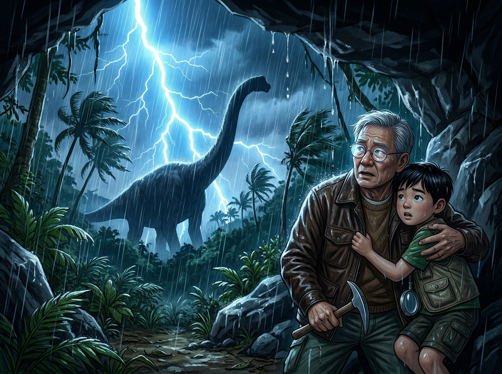

🦴 ×
0
‹
›
🌋 第五章
火山与生存
地球内部 · 间歇泉 · 双冠龙真相

Ian走进了一条
火山峡谷
——
地面是温暖的！蒸汽从岩石缝里冒出来，
远处有
温泉
和
间歇泉
。
🧒 "好暖和！地面像有暖气一样……
难怪这里的植物比外面还茂盛！"
峡谷的另一端，一只
6米长
的恐龙
挡住了去路！它头上有
两道醒目的
骨质冠饰
——
是
双冠龙
（Dilophosaurus）！
🎬 电影 vs 真实：双冠龙
❌ 电影里的双冠龙：
小个子
、
脖子上有
皱褶
、会
喷毒液
——这些
全是编的
！
✅ 真正的双冠龙：
6米长
的大型肉食恐龙！
头上的
双冠
是用来
展示
和
辨认同伴
的，
没有皱褶，没有毒液，
但它跑得
非常快
，是早期侏罗纪的顶级猎手！
🌍 科学时间：地球的内部
地球就像一个
煮熟的鸡蛋
：
🥚
地壳
（蛋壳）：最薄，我们住在上面
🟠
地幔
（蛋白）：很厚，岩浆在这里缓慢流动
🔴
地核
（蛋黄）：超级热！温度达6000°C！
火山
就是地壳上的"裂缝"——
地幔里的岩浆通过裂缝涌出来！
温泉
：地下水被岩浆加热后冒出来
间歇泉
：水加热→压力增大→喷发→冷却→重复！
🏝️ 为什么这座岛上还有恐龙？
6600万年前，小行星撞击地球，
灰尘遮住了太阳，地球变得又冷又暗。
大部分恐龙都灭绝了。
但这座岛有
火山地热
！
地热像一个天然的
暖房
——
即使外面冰天雪地，
岛上依然
温暖如春
。
恐龙在这个
密封的生态系统
里
活了下来！
🌍 地球最中心（地核）的温度大约是？
A. 100°C（开水的温度）
B. 1000°C
C. 6000°C（比太阳表面还热！）
双冠龙朝Ian走来！
但Ian注意到峡谷中间有一个
间歇泉
——
每隔一段时间就喷出巨大的
蒸汽柱
！
🧒 "1、2、3……喷了！
1、2、3……又喷了！
每
20秒
喷一次！"
Ian等间歇泉喷发的瞬间
冲了过去
——
巨大的蒸汽遮住了双冠龙的视线！
等蒸汽散去，Ian已经在
另一边
了！
🌋 间歇泉时机游戏
观察间歇泉的节奏，在它
喷发的瞬间
点击"冲！"
💨 观察节奏……
冲！🏃
💡 观察→计时→预测
Ian用的方法就是
科学方法
！
1️⃣
观察
：间歇泉有规律地喷发
2️⃣
计时
：发现每20秒喷一次
3️⃣
预测
：知道下一次什么时候喷
这就是科学——
找到规律，预测未来
！
📚 你学到了什么
✅ 地球分三层：
地壳
、地幔、
地核
（6000°C）
✅ 真正的双冠龙
6米长
，没有皱褶，不会喷毒
✅
间歇泉
：加热→压力→喷发→冷却→重复
✅ 科学方法：
观察→计时→预测
🏠 下一章：回家 →
📖 目录